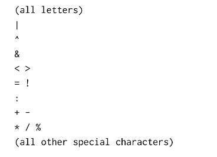

Scala notes
Elements
Evaluation strategy
Call-by-value:
A strict evaluation strategy, in which the expression is evaluated and bound to the corresponding parameter before the function body is evaluated.
The val form is CBV.
val z ={
println("z");
3
}
Running this will give
z
val z: Int = 3
Calling z will not print “z” because it has been evaluated while defined.
Scala uses CBV by default.
Call-by-name:
A non-strict evaluation strategy which will defer the evaluation of the expression until the program needs it.
The def form is CBN.
def z ={
println("z");
3
}
Running this will only give
def z: Int
But every time calling z will print “z”.
Definitions of functions can have parameters. To make a parameter CBN just add => before the type.
def constOne(x: Int, y: => Int) =1
x is CBV, and y is CBN.
Lazy evaluation Avoid computing the elements of a sequence until they are needed for the evaluation result. See [LazyList].
To solve the problem of recomputing many times, we can store the result of the first evaluation of a value and reuse the stored result instead of recomputing.
lazy val y = { print ("y"); 2}
Termination of evaluation strategy
If CBV evaluation of an expression eterminates, then CBN evaluation terminates, too.
def first(x: Int, y: Int) =x
first(1,loop)
Under CBN it will give 1, while under CBV it will loop.
Blocks and Lexical Scope
Blocks: {} The last element of a block is an expression that defines its value. The definitions inside a block are only visible from within the block, and will shadow definitions of the same names outside the block (Definitions of outer blocks are visible inside a block unless they are shadowed).
In Scala 3, braces are optional around a correctly intented expression that appears after =, then, else, ...
Tail recursion
One can equire that a function is tail-recursive using a @tailrec annotation:
import scala.annotation.tailrec
@tailrec
def factorial(...):Int = ...
Higher-order functions
Type A => B is the type of a function that takes an argument of type A and returns a result of type B. Anonymous Functions can be expressed as follows:
(x1: T1,...,xn: Tn) => E
which means
def f(x1: T1,...,xn: Tn) = E;
f
E is the body and x_n is the parameters of the function.
The definintion of funtions that return funtions is useful.
def f(ps_1)...(ps_n) = E
where n>1, is equivalent to
def f(ps_1)...(ps_n_1) = {def g(ps_n) = E; g}
So the left side needs to take ps_n and return E of all the parameters.
By repeating the process, the expression is shown to be equivalent to
def f = (ps_1 => (ps_2 => (...(ps_n => E))))
Note that function types associate to the right, whiuich means
Int => Int => Int
is equivalent to
Int => (Int => Int)
Data abstraction
Class
Abstract Classes
abstract class IntSet:
def incl(x: Int): IntSet //insert an elem
def contains(x: Int): Boolean
Abstract classes can (but not necessarily) contain members which are missing an implementation.
class Empty() extends IntSet:
def contains(x: Int): Boolean = false
def incl(x: Int): IntSet = NonEmpty(x, Empty(), Empty())
class NonEmpty(elem: Int, left: IntSet, right: IntSet) extends IntSet:
def contains(x: Int): Boolean = ...
def incl(x: Int): IntSet = ...
Empty and NonEmpty extend the class IntSet, and they are subclass of IntSet. IntSet is the superclass of Empty and NonEmpty.
It is possible to redefine an existing, non-abstract definition in a subclass by using override def.
Objects
Create an object by calling the constructor of the class.
Object definition defines a singleton object of an abstract class.Once it is defined, no other instance of it can be created. Singleton object evaluates to itself. Objects live in the term namespace, whereas classes live inthe type namespace.
object Empty extends IntSet:
def contains(x: Int): Boolean = false
def incl(x: Int): IntSet = NonEmpty(x, Empty, Empty)
If a class and object with the same name are given in the same sourcefile, we call them companions. A companion object of a class plays a role similar to static class definitions.
class IntSet ...
object IntSet:
def singleton(x: Int) = NonEmpty(x, Empty, Empty)
It is possible to create standalone applications in Scala using an object with a main method. Or just add a @main before the function definition.
To place a class or object inside a package, use a package cluase at the top of the source file.
package example
object Hello
class Rational
> scala example.Hello
> import example.Rational
> import example._
Objects everywhere [Lec 1.3.4]
Boolean type can be implemented like normal classes.
abstract class Boolean extends AnyVal:
def ifThenElse[T](t: => T, e: =>T): T
def && (x: => Boolean): Boolean = ifThenElse(x, false)
def || (x: => Boolean): Boolean = ifThenElse(true, x)
object true extends Boolean:
def ifThenELese[T](t: => T,e: => T) = t
object false extends Boolean:
def ifThenELese[T](t: => T,e: => T) = e
extension (x: Boolean):
def ===> (y: Boolean) = x.ifThenElse(y, true)
Natural numbers can be implemented like normal classes. Function values are treated as objects in Scala, and functions are objects with apply methods.
trait Function[A,B]:
def apply(x: A): B
(x: Int) => x*x
//means
new Function[Int, Int]:
def apply(x: Int) = x*x
A function call f(a,b) is expanded to f.apply(a,b)
Trait
A class has several natural supertypes to which it conforms or from which it wants to inherit code.
trait Planar:
def height: Int
def width: Int
def surface = height * width
class Square extends Planar
Classes, object and traits can inherit from at most one class but arbitrary many traits.
Methods
Package functions operating on a data abstraction in the data abstraction itself. Such functions inside the class are called methods.
class Rational(x: Int, y: Int):
require(y!=0, "denominator must be non-zero")
private def gcd(a: Int, b: Int): Int =
if b==0 then a else gcd(b, a%b)
private val g = gcd(x.abs, y.abs)
val numer = x/g
def denom = y/g
def add(r: Rational) =
Rational(numer * r.denom + r.numer * denom, denom * r.denom)
def neg = Rational(-numer, denom)
override def toString = s"$numer/$denom"
end Rational // `end` must align with the opening keyword, followed by the name in the definition.
val x = Rational(1,2)
val y = Rational(3,4)
x.g //Error: value g in class Rational cannot be accessed as a member of x
x.add(y) //x+y
//
private means it cannot be called outside the class.
Self reference
On the inside of a class, the name this represents the object on which the current method is executed.
class Rational(x: Int, y: Int):
def less(that: Rational): Boolean =
this.numer * that.denom < that.numer * this.denom //`this` can be omitted
def max(that: Rational): Rational =
if this.less(that) then that else this
Auxiliary Constructors
class Rational(x: Int, y: Int):
def this(x: Int) = this(x, 1) //auxiliary method
Rational(2) // 2/1
Extension Methods
Not having to define all methods that belong to a class inside the class itself. Extensions can only add new members, and cannot refer to ohter class members via this.
extension(r: Rational):
def min(s: Rational): Boolean = if s.less(r) then s else r
def abs: Rational = Rational(r.numer.abs, r.denom)
Extensions can define operators. For example, operators such as + or < count as identifiers in Scala.
extension(x: Rational):
def + (y: Rational): Rational = x.add(y)
Enums [Lec 1.4.4]
An enum enumerates all the cases of an ADT(algebraic data types) and nothing else.
What is algebraic data types? Pure data definitions like this
trait Expr
object Expr:
case class Var(s: String) extends Expr
case class Number(n: Int) extends Expr
case class Sum(e1: Expr, e2: Expr) extends Expr
case class Prod(e1: Expr, e2: Expr) extends Expr
We need to use Expr.Number(1) instead of Number(1), or use import Expr._
We can define the above like this:
enum Expr:
case Var(s: String)
case Number(n: Int)
case Sum(e1: Expr, e2: Expr)
case Prod(e1: Expr, e2: Expr)
Enums can take parameters and can define methods. Enum cases that pass parameters have to use an explicit extends clause.
An enum can comprise parameterized and simple cases at the same time.
Option Type
trait Option[+A]
case class Some[+A](value: A) extends Option[A]
object None extends Option[Nothing]
Options can be decomposed using pattern matching.
Deal with types [Lec 1.4.1] [Lec 1.4.5, 1.4.6]
Type tests
x.isInstanceOf[T] //Boolean
x.asInstanceOf[T].method //T.method
Ugly and unsafe.
Pattern Matching
case class
trait Expr
case class Number(n: Int) extends Expr
case class Sum(e1: Expr, e2: Expr) extends Expr
def eval(e: Expr): Int = e match // def eval: Int = this match ...
case Number(n) => n
case Sum(e1, e2) => eval(e1) + eval(e2)
MatchError is thrown if no pattern matches the value of the selector.
Type bounds
S <: T means S is a subtype of T. S >: T means S is a supertype of T. S >: NonEmpty <: IntSet restricts S any type on the interval between NonEmpty and IntSet.
Variance [Lec 1.4.6]
C[T] is a parameterized type and A, B are types such that A <: B. If A <: B, the everything one can do with a value of type B one should also be able to do with a value of type A.
C[A] <: C[B] // C is covariant. class C[+A]
C[A] >: C[B] // C is contravariant. class C[-A]
neither C[A] and C[B] is a subtype of the other // C is nonvariant. class C[A]
If A2 <: A1 and B1 <: B2 then A1 => B1 <: A2 => B2
A <: B => List[A] <: List[B]. List is covariant.
trait List[+T]
object Empty extends List[Nothing]
Array in Scala is not covariant.
Covariant type parameters can only appear in method results. Contravariant type parameters can only apperat in method parameters. In variant type parameters can appear anywhere.
Convariant type parameters may appear in lower bounds of method type parameters. Contravariant type parameters may appear in upper bounds.
Type parameters
Generic Functions
def singleton[T](elem: T) = Cons[T](elem, Nil[T])
singleton[Int](1)
singleton[Boolean](true)
Implicit parameter
The compiler infers the argument value based on its expected type.
An implicit parameter is introduced by a using parameter clause like this:
def sort[T](xs: List[T])(using ord: Ordering[T]): List[T] = ...
// Explicit argument:
sort(string)(using Ordering.String) // the argument can be left out
Multiple parameters can be in a using clause or several using clauses.
def f(x: Int)(using a: A, b: B) = ...
//or
def f(x: Int)(using a: A)(using b: B) = ...
f(x)(using a, b)
Parameters of a using clause can be anonymous, or using a context bound
def sort[T](xs: List[T])(using Ordering[T]): List[T] = ...
def sort[T: Ordeing](xs: List[T]): List[T] = ...
Given Instances
object Ordering:
given Int as Ordering[Int]: // what is after as is the true name of this instance
// This code defines a given instance of type Ordering[Int], named Int (or other names!).
def ...
given Ordering[Double]: //given abitrary name as Ordering[Double]
//Anonymous given instance
def ...
A type class trait may define extension methods, to contain comparison methods like this:
trait Ordering[A]:
def compare(x: A, y: A): Int
extension (x: A)
def < (y: A): Boolean = compare(x, y) < 0
...
Extension methods on a type class trait are visible whenever a given instance for the trait is available.
Summoning an Instance
Refering to an instance by its type.
summon[Ordering[Int]]
def summon[T](using x: T) = x
Collections
Lists
trait List[T]:
def isEmpty: Boolean
def head: T
def tail: List[T]
class Cons[T](val head: T, val tail: List[T]) extends List[T]:
def isEmpty = false
class Nil[T] extends List[T]:
def isEmpty = true
def head = throw new NoSuchElementException("Nil.head")
def tail = throw new NoSuchElementException("Nil.tail")
[T]: type parameters
Lists are homogeneous. The type of a list with elements of type T is written as List[T]/scala.List[T].
All lists are constucted from: empty list Nil and construction operation ::. For example: x::xs give a new list with the first element x followed by elements of xs. Operators ending in “:” associate to the right.
Operations on Lists: List
Often used: (also for other sequences)
:+ // append an element at the end
::
::: or ++ //concatenation
contains
head
last
tail
init
isEmpty/nonEmpty
exists(p)
/*
val a = "some random test message"
val keys = List("hi","random","test")
To check whether the string `a` contains any values from `keys`:
keys.exists(a.contains)
*/
filter
filterNot
withFilter // used in map, flatMap, foreach. It will not produce a new collection.
find // return an Option, use `get` to get the value
indexOf
map
forall(p)
flatMap(f)
flatten
foldLeft
foldRight
length
sort
mkString
reverse
take(n)
drop(n)
sorted // default acsending order for the type
sortWith(order) // e.g. _.length < _.length
xs.zip(ys) // A sequence of pairs drawn from corresponding elements of sequences xs and ys
span(p: (A) => Boolean) // Splits this list into a prefix/suffix pair according to a predicate.
distinct //make elements distinct
Reduction of Lists (Lec 1-5-4)
List(x1,...,xn).reduceLeft(op) = x1.op(x2).op(x3)... .op(xn)
def sum(xs: List[Int]) = (0::xs).reduceLeft((x,y) => x+y) // (_+_)
def foldRight[A,B](as: List[A], z: B)(f: (A, B) => B): B =
as match {
case Nil => z
case x::xs => f(x, foldRight(xs, z)(f))
}
List(x1,...,xn).foldRight(z)(f) = x1.op(x2.op(...xn.op(z)))
def foldLeft[A,B](as: List[A], z: B)(f: (B, A) => B): B =
as match {
case Nil => z
case x::xs => foldLeft(xs, f(z, x))(f)
}
foldRight and foldLeft can also be methods of an abstract class:
foldLeft(as, z)(f) = z.op(x1).op(x2). ... .op(xn)
Reasoning about Lists: Referential Transparency
To prove a property P(xs) for all lists xs.
- show that P(Nil) holds
- For a list xs and some element x, show if P(xs) holds, then P(x::xs) holds
Tuple class
val pair = ("answer", 42)
pair._1 // String = answer
pair._2 // Int = 42
Vectors
x +: xs
xs :+ x
// x is element, xs is the =sequence
Ranges
val r: Range = 1 until 5 // 1, 2, 3, 4
val s: Range = 1 to 5 // 1, 2, 3, 4, 5
val t: Range = 1 to 10 by 3 // 1, 4, 7, 10
r.toList // List(1, 2, 3, 4)
Sets
Sets are unordered and do not have duplicate elements.
val fruit = Set("apple", "banana", "pear")
val s = (1 to 6).toSet
fruit.contains("apple") // true
Maps
// Map[Key, Value]
val hey = Map("A" -> 1, "B" -> 2, "C" -> 3)
val hi = Map("B" -> 4)
hey("A") // 1
hey.get("A") // Some(1)
Some operations:
// Concatenation
hey ++ hi // Map(A -> 1, B -> 4, C -> 3)
hi ++ hey // Map(B -> 2, A -> 1, C -> 3)
// Maybe what is after ++ will update the value
hey + ("D" -> 5) // Map(A -> 1, B -> 2, C -> 3, D -> 5)
// GroupBy:
val a = List("apple", "banana", "pear", "peach")
a.groupBy(_.head) // HashMap(a -> List(apple), b -> List(banana), p -> List(pear, peach))
// Default Values: turn a map into a function
val temp = hey.withDefaultValue(42)
temp("A") // 1
temp("K") // 42
We can use map to map a String to a sequence
val a = "abc"
val b = Map('A' -> 1, 'B' -> 2, 'C' -> 3)
a.toUpperCase.map(b) // ArraySeq(1, 2, 3)
LazyList
val xs = LazyList.cons(1, LazyList.cons(2, LazyList.empty))
val a = List(1,2,3)
a.to(LazyList) // toLazyList
LazyListsupport almost all methods of List.
x #:: xs = LazyList.cons(x, xs)
// note the #, ite produces a lazy list
LazyList can define infinite lists.
def from(n: Int): LazyList[Int] = n #:: from(n+1)
val nat = from(0)
// This is a kind of method to generate infinite list.
val x = 2
def improve(guess: Double) = (guess + x/guess)/2
lazy val guesses: LazyList[Double] = 1 #:: guesses.map(improve)
// This is another method, using map
Functions for collections
Mapping
extension [T](xs: List[T])
def map[U](f: T=>U): List[U] = xs match
case Nil => xs
case x::xs => f(x) :: xs.map(f)
Actual defiintion of map is tail-recursive and works for arbitrary collections.
Filtering
extension [T](xs: List[T])
def filter(p: T => Boolean): List[T] = this match
case Nil => this
case x::xs => if p(x) then x::xs.filter(p) else xs.filter(p)
For-Expressions
For-expression is similar to loops, but it builds a list of the results of all iterations.
for s yield e // s: generators and filters, e: an element returned by the iteration
for
i <- 1 until n
j <- 1 until i
if isPrime(i+j)
yield (i,j)
// This expression equals to (1 until n).flatMap(i => (1 until i).map(j => (i,j))).filter((i, j) => isPrime(i+j))
The type of the sequence can be modified at the start:
for
i <- (1 until n).toSet
yield
i
// thus will generate a set
For expressions can be used with pattern matching.
for
case ("phoneNumbers", JSON.Seq(numberInfos)) <- bindings(jsData)
numberInfo <- numberInfos
With case, only take certain elements that match the case pattern.
The syntax of for is closely related to the higher-order functions map, flatMap, filter
for x <- e1 yield e2
// is translated to
e1.map(x => e2)
Functional random generators
trait Generator[+T]:
def tenerate(): T
val integers = new Generator[Int]:
val rand = java.util.Random()
def generate() = rand.nextInt()
extension [T, S](g: Generator[T])
def map(f: T => S) = new Generator[S]:
def generate() = f(g.generate())
val booleans = integers.map(x => x>0)
Random Test Function
ScalaCheck
Syntactic Miscellaneous
makeString
s"${}....${}"
s means where the string begins, and everything in the braces following a $ will be interpreted as an expression evaluated.
override def
Not to use default methods but our own methods.
Conditions
require(Expr, "IllegalArgumentExceptionMessage") // check the precondition
assert(Expr, "AssertionErrorMessage") //check the bugs
Infix Notation
extention (x: Rational):
@infix def min(y: Rational): Rational = ...
r min s = r.min(s)
r+s = r.+(s)
Precedence Rules
Exceptions
throw new Exc("Message") //type: Nothing
A try/catch expression consist of a body and one/more handlers.
try {...}
catch {
case e: NoSuchElementException => ...
case BadInput(msg) => ...
}

Repeated parameter
def apply[A](as: A*): List[A] = ...
*_ none or several parameters of type A can be taken.